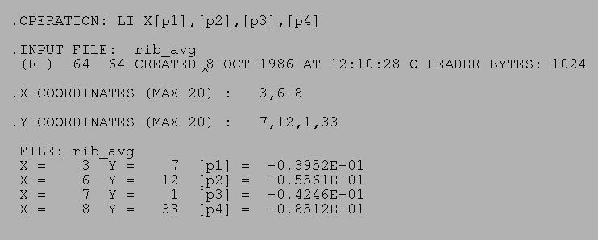

| .OPERATION: | LI X [p1],[p2],[p3],[p4] | ; List image values in register variables |
| .INPUT FILE: | rib_avg | ; Image file name (input) |
| .X-COORDINATES (MAX 20): | 3,6-8 | ; List of X locations |
| .Y-COORDINATES (MAX 20): | 7,12,1,33 | ; List of Y locations |
| INPUT IMAGE |
|---|
|
| rib_av |
| RESULTS FILE |
|---|
|  |
| lix_resu |